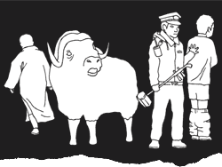

 image: Ippei N.“Upon seeing the delinquent busker dragged from the scene with his trousers at his ankles, I felt lost. ”
I had only been in Shanghai but a few days when, walking back from work along Nanjing Xi Lu[1], I came across my first city busker. Happily high on Constant Discovery as is generally the case with fresh arrivals, I stopped to listen. The melody was alien but more curious was the attention the minstrel drew. In London, I was used to buskers, no matter how talented, being determinedly ignored.
Here, passers-by not only stopped to watch, they did so wearing polished smiles and toothless grins. Eyes were closed deep in meditation. Perusing the watching faces, I, too, began to drift off in reverie. Suddenly, the crowd’s attention grew fervent. A disturbance rippled through the back of the group, eventually bursting through the assembly to the musical oasis at its core.
Police.
Quickly and quietly, policemen handcuffed the musician. As they turned to leave, the crowd began shouting, words indecipherable to my ear but clearly in protest. Soon, cars had stopped on the street and bicycles had been abandoned as their owners gathered to have their say. Then, seemingly in an attempt to fend off the hostile onlookers, the policemen unbuckled the musician’s trousers. My amusement dissipated, and was replaced by disgust.
Until this point, the experience, while odd, had at least made sense to me. Upon seeing the delinquent busker dragged from the scene, with his trousers at his ankles, I felt lost.
A monk, no doubt drawn to the throng from Jing’an Temple[2] just around the corner, studied me. Reading my confusion, he spoke: “He has lost face. Now he will never commit this crime again.”
I stared. My first encounter with a Buddhist monk and I was speechless. But no sooner had he begun to impart his wisdom on me, he turned, pulled out his state-of-the-art mobile phone and walked off, destroying my quaint, half-formed illusion of simple monk life just as the policemen had destroyed the beauty of a stranger’s music with an act of violence and humiliation.
referenced works
- Nanjing Xi Lu (or West Nanjing Road) is, according to some sources, the world’s longest shopping district. The strip runs for roughly 6km, and has Shanghai’s highest concentration of high-end brands. Malls on Nanjing Xi Lu including Plaza 66 and Westgate Mall house luxury retailers such as Hermes, Louis Vuitton and Versace. At People’s Square, the street turns into Nanjing Dong Lu (East Nanjing Road); extending all the way to the Bund, this pedestrian-only shopping street is a favourite frolicking spot for domestic tourists. A mix of traditional shops, foreign brands, street vendors and restaurants are crammed onto the lively strip – though it’s low on actual attractions, it’s high on something the Chinese love: renao (literally, a ‘hot and noisy’ ambience). At night, a dizzying parade of neon lights and store signs make Nanjing Dong Lu one of the most memorable stretches of street in Shanghai. ↩
- Literally ‘Temple of Peace and Tranquillity’, Jing’an Temple is a Buddhist temple in central Shanghai. First built in 247 AD, the temple was used as a plastics factory during the Cultural Revolution. In 1983, it was restored to its original, intended use as a place of worship. ↩
location information
- Name: the top of the escalator at Exit 7, Jing'an Temple metro station
- Time of story: Afternoon
- Latitude: 31.222509
- Longitude: 121.446004
- Map: Google Maps
014 “The pages are half-soaked in noodle water, the edges of the letters blurred. ”
013 “Hundreds of eyes continued to dart around me, hundreds of eyes continued to pass me over.”
012 “I could be anywhere, really. There are no landmarks here.”
011 “I strained to keep my eyes on that crazy perm but the automatic doors hissed shut and she was gone. ”
010 “How could these seemingly disparate worlds co-exist? Wouldn't they come together and explode like anti-matter?”
009 “It's strange how her hair seemingly reacts to her mood – her fountains wilt and slump when she is tired and grumpy. ”
008 “Your bones are cold.”
007 “Upon seeing the delinquent busker dragged from the scene with his trousers at his ankles, I felt lost. ”
006 “As we all stare at her open-mouthed, she starts to beg like a dog, barking and licking my hand. ”
005 “It's like... one long catwalk of H&M zombies. Where are all the individuals?”
004 “Like many aimless thirtysomethings, I balance violent fantasies of self-destruction with monthly pension payments. ”
003 “It was only a 10-minute bike ride from city centre, but 10 minutes in the wrong direction. ”
002 “I thought of the mutilated pig lying atop cardboard boxes of cereal and pasta, seeping trichinosis as the van bounced along. ”
001 “And then there is only tumbling, hexagonal cold.”

Write for Us!
We’re looking for short narratives describing pivotal moments of elation, confusion, absurdity, love or grief — or anything in between — inseparably tied to a specific place in Shanghai.
Shanghai:
Or receive updates by email
Addresses only used for the occational hitotoki mailing. Otherwise shoved behind the pitch black toilet in Boonna Cafe II.
A list of all available RSS feeds is on the about page
commentary